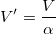
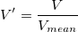
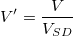
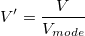

を入力ベクターデータ、
を入力ベクターデータ、 がユーザ定義の値とすると、正規化したベクターデータ
がユーザ定義の値とすると、正規化したベクターデータ  は次のように計算されます。
は次のように計算されます。
内容 |
入力ベクトル/列を正規化します
| 表示 名 |
変数 名 |
I/O と データ型 |
デフォルト 値 |
説明 |
|---|---|---|---|---|
| 入力 | ix |
入力 vector |
|
入力ベクターデータまたは列を指定します |
| データ情報 | datainfo |
入力 TreeNode |
これはダイアログにデータ情報を表示するためのものです。LabTalkでXファンクションを使うとき、この変数は使用しないで下さい。 | |
| 正規化の方法 | method |
入力 int |
|
データを正規化するのに使用する方法を指定します。
|
| ユーザ定義の値 | val |
入力 double |
|
この変数は、方法が特定値で割るにセットされている場合のみ利用できます。入力ベクターデータを割るのに使用する値を指定します。 |
| 参照列 | refcol |
入力 Column |
|
この変数は、方法が参照列を使うにセットされている場合のみ利用できます。これは1つの参照列を指定する変数です。 |
| 正規化 | type |
入力 int |
|
この変数は、正規化の方法が参照列を使うにセットされている場合のみ利用できます。参照列のどの統計量を正規化の値にするかを決定します。正規化したら、入力列の選択された統計量が参照列の統計量と合致します。
オプションリスト
|
| 参照セル | cell |
入力 Range |
|
この変数は、方法が参照セル値で割るにセットされている場合のみ利用できます。入力データを割るのに使用するセルを指定します。 |
| 出力 | ox |
出力 vector |
|
正規化したベクターデータの出力を指定します。 |
この関数はベクターデータに正規化を実行します。
平均値での除算で2番目の列を正規化し、結果を新しい列に出力するには、コマンドウィンドウに次のように入力します。
vnormalize ix:=Col(4) method:=Mean ox:=<new>;
を入力ベクターデータ、 がユーザ定義の値とすると、正規化したベクターデータ は次のように計算されます。

[0, 1]に正規化

[0, 100]に正規化
}{V_{max}-V_{min}}")
Zスコア(N(0, 1)で正規化)
最大値で割る

最小値で割る

平均で割る

中央値で割る

標準偏差で割る

ノルムで割る


はn番目の 値です。
最頻値で除算

Divided by Sum: